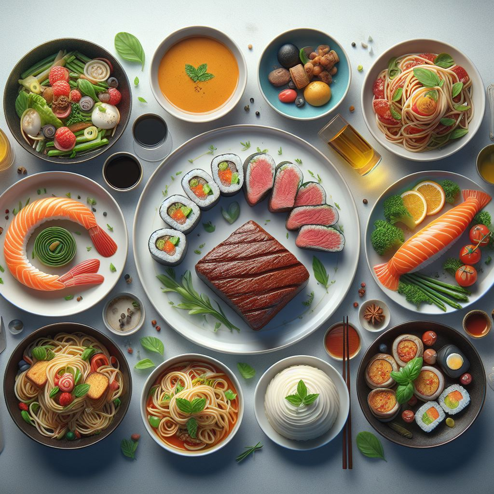
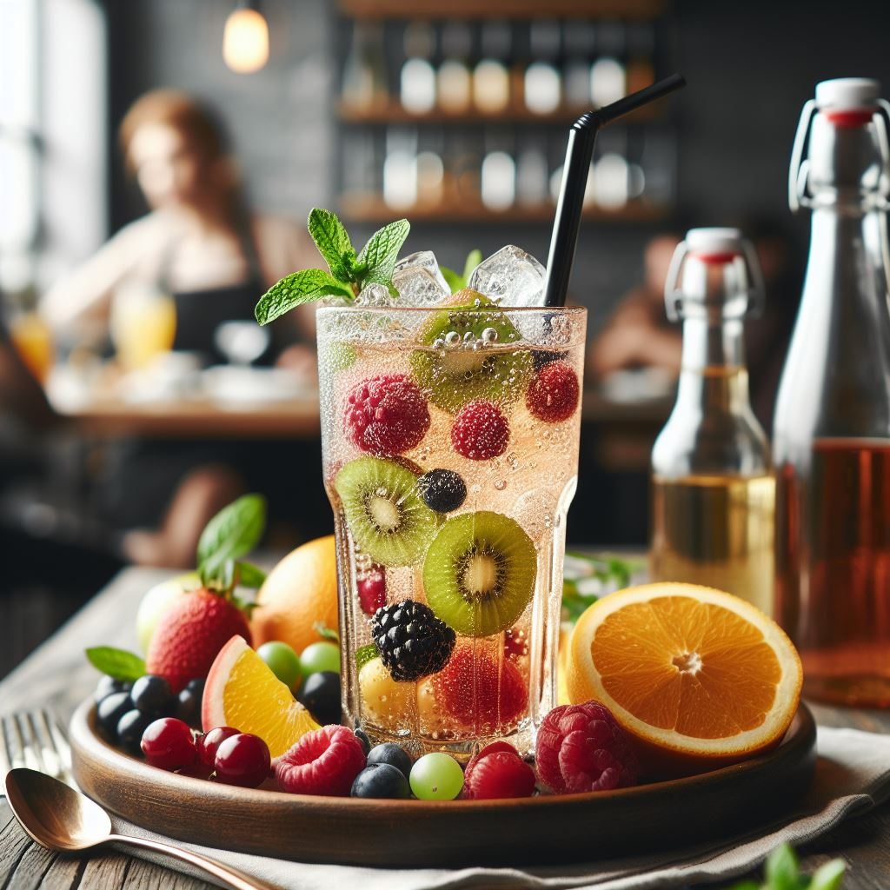

Burgers
בורגר: "טעימה קלאסית"
"התענגו על חוויית הבורגר שלנו, "טעימה קלאסית.
פטי בשר מתוך חושים, משומן במהירות ובצורה מושלמת, שמסודר על מצע פריך ורך.
נוספים אליו עסקים עגבניות בשף, גבינה ממולאת ורוטב הסוד שלנו,
הכול מתאחד בבצל לחם מטוסט שמחזיק בכל היבט במהלך כל כמה פירות.

Asian
אוכל האסייתי מצויין בכלליותו ובמגוון רב של טעמים,
ריחות, וטקסטורות. נשמע המון טעמים וזהו, תצאו למסע קולינרי שלם!
את האוכל האסייתי ניתן לתאר בכלליות כפורה בין המסורת לחדשנות,
עם גישה יצירתית לקולינריה הפוגשת במגוון רב של רכיבים ותרבויות.

Desserts
קינוח בכוס: "התענגות על נפלאות התותים"
תפנקו את עצמכם עם "התענגות על נפלאות התותים",
קינוח בכוס שנעשה משכבות של קרם קטיפתי,
בינונן עם טעמי התותים הגדולים והאדמיתיים שלנו - תותי פרסה ותותי כדור קפואים בצורה יוצאת
דופן.

Fruits
פלטת פירות: "סימפוניית הטבע"
שקפו את עצמכם במגוון הצבעים והטעמים של פלטת הפירות "סימפוניה של הטבע".
מבוססת על בחירה יסודית של פירות עונתיים,
כל אחת מסודרת וחותכת בקפידה כדי ליצור מחווה רפרשינג ומופלאה לעין.

Drinks
סודה עם פירות: "פיז ופיוזן"
הכירו את "פיז ופיוזן" - חוויה של טעמים של התמזגות מושלמת.
הסודה שלנו היא סימפוניה של פיזורים בינלאומית,
בשילוב עם עסקית של פירות שנבחרו בקפידה,
יוצרים חוויה פרוכה ופועמת.